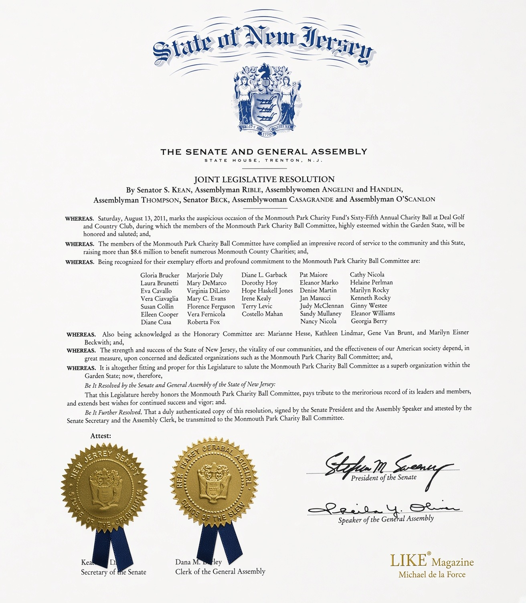
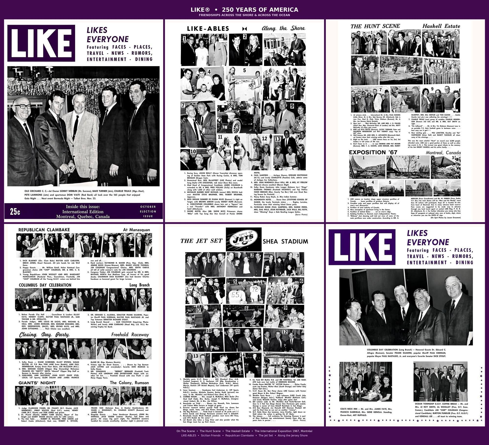
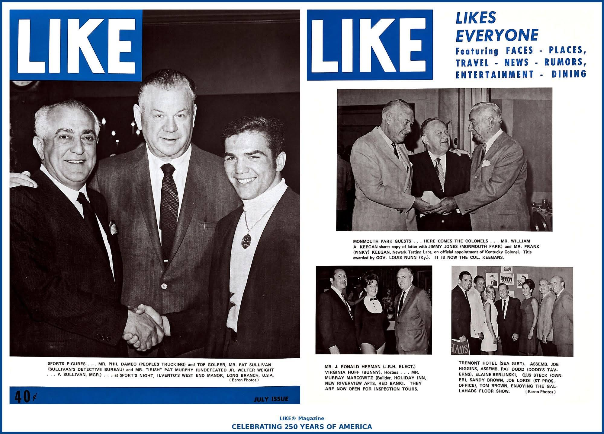
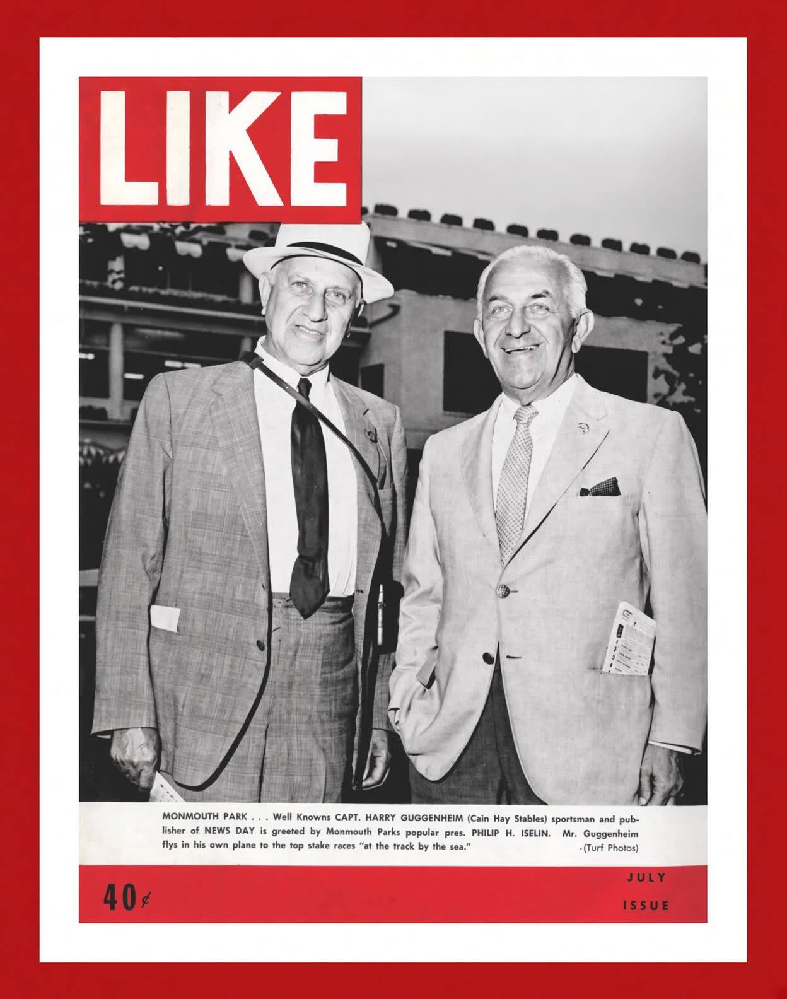
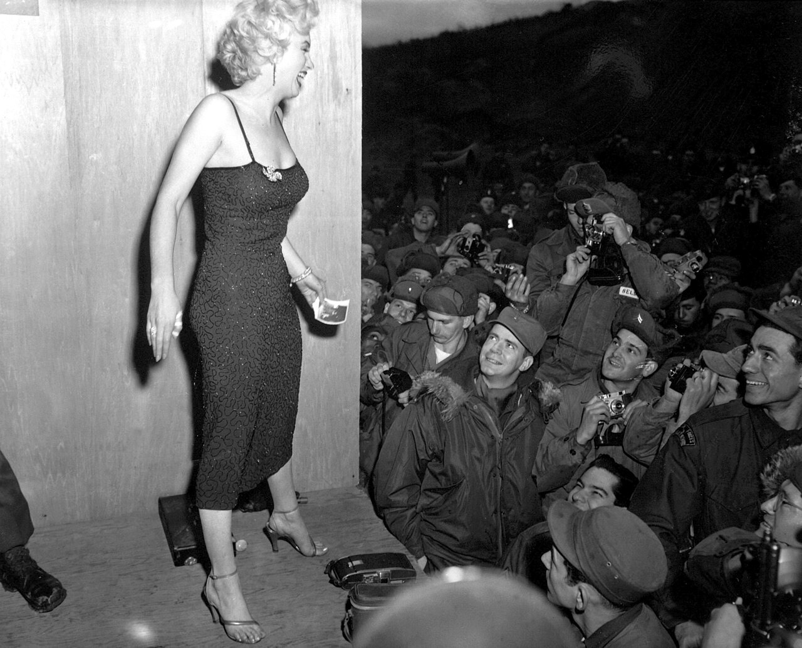
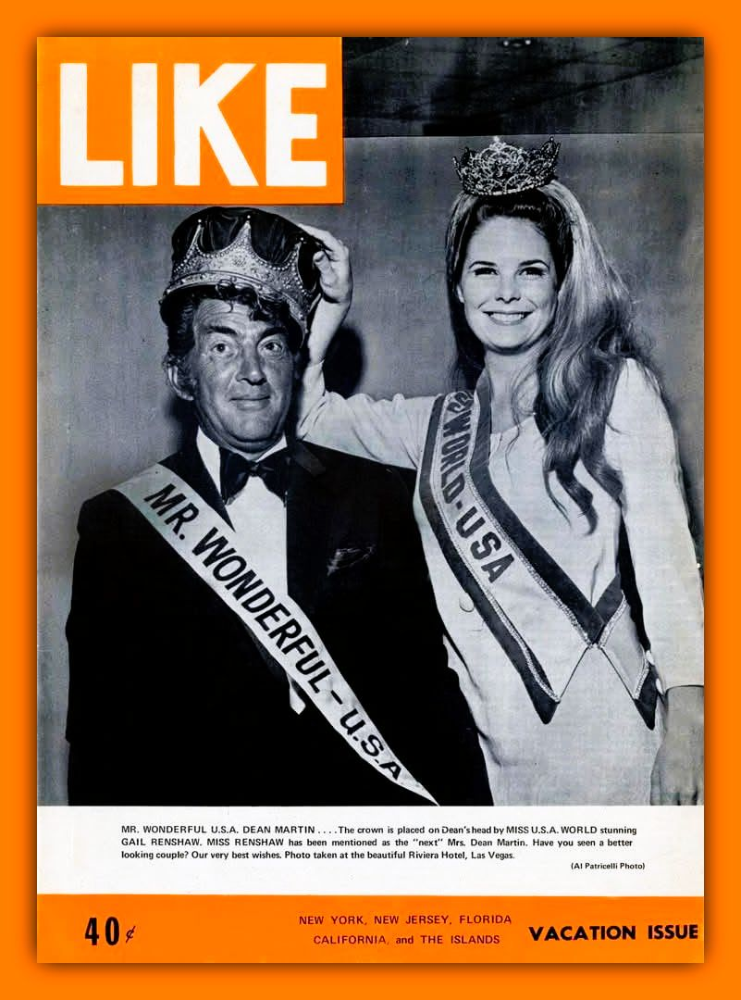
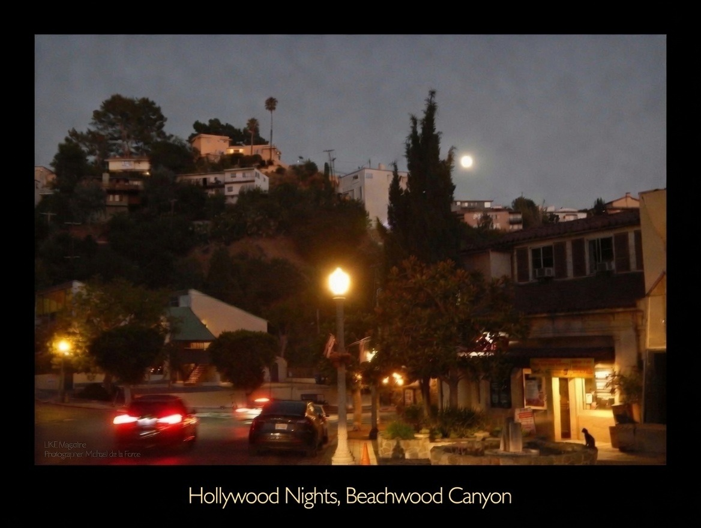

Latest from LIKE® Magazine

(LIKE® Leaders)
GLORIA STEINEM WALKS ON: INK, THE APOLLO STUMP, AND THE WOMEN WHO WALKED WITH HER

(LIKE® Leaders)
250 YEARS OF AMERICA: MUHAMMAD ALI

(ON THIS DAY)
EIGHTY SEASONS AT THE RAIL: FIFTEEN YEARS AFTER MONMOUTH PARK’S 65TH CHARITY BALL

(LIKE® International)
250 YEARS OF AMERICA: FRIENDSHIPS ACROSS THE SHORE & ACROSS THE OCEAN

(LIKE® Industry)
250 YEARS OF AMERICA: FROM PRIVATE DETECTIVES TO REAL-TIME SURVEILLANCE — TRUCKING DYNASTIES, KENTUCKY COLONELS, AND THE NEW JERSEY SHORE IN LIKE® MAGAZINE

(LIKE® Magazine)
250 YEARS OF AMERICA: POWER, PAGEANTRY, AND THE TRACK IN THE AUTUMN OF 1966

(LIKE® American Legacy)
250 YEARS OF AMERICA: FROM MONMOUTH’S TRACK BY THE SEA TO THE GLOBAL TURF — HOW GUGGENHEIM’S AVIATION VISION AND ISELIN’S SEASIDE EMPIRE HELPED CARRY AMERICAN RACING ACROSS OCEANS AND INTO THE WORLD

(LIKE® Leaders)
250 YEARS OF AMERICA: THE WORK AND INFLUENCE OF FINE AMERICAN VICE-PRESIDENCIES

(LIKE® History of Community Service)
250 YEARS OF AMERICA: THE ONE-MAN MORALE MACHINE

(LIKE® Travel, Tourism, Entertainment & Culture)
250 YEARS OF AMERICA: CROWN FOR A CROONER

(LIKE® Features)
HOLLYWOOD NIGHTS

(LIKE® Medicine)
THE HEART OF RESILIENCE: HOW DR. DAWN MUSSALLEM DEFIED DEATH TO REVOLUTIONIZE LONGEVITY MEDICINE

(LIKE® Music)
TONY BENNETT AT ONE HUNDRED: THE GENTLEMAN OF CENTRAL PARK SOUTH WHO LEFT HIS HEART IN EVERY CITY HE SANG

(LIKE® International)
LIFE OF LAW, MERCY, AND DUTY: THE ROYAL FIFTIETH-DAY MERIT-MAKING FOR HER ROYAL HIGHNESS PRINCESS BAJRAKITIYABHA NARENDIRADEBYAVATI

(LIKE® Music)
LIKE® MUSIC: SIMPLY RED — “HOLDING BACK THE YEARS” AT 40
SPOTLIGHT